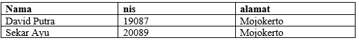

Merupakan kumpulan dari beberapa data yang saling berhubungan yang tersimpan di dalam komputer dan menggunakan perangkat lunak untuk memanipulasinya adalah definisi dari …
a. Basis data
b. Table
c. Record
d. SQL
e. Field
Jawaban A
Kumpulan dari beberapa data yang saling berhubungan yang tersimpan di dalam komputer dan menggunakan perangkat lunak untuk memanipulasinya merupakan definisi dari basis data
Suatu field yang dapat dijadikan kunci dalam operasi tabel dalam konsep basis data adalah …
a. Field
b. Table
c. Record
d. SQL
e. Key
Jawaban E
Suatu field yang dapat dijadikan kunci dalam operasi tabel dalam konsep basis data adalah Key
Suatu bahasa (language) yang digunakan untuk mengakses database merupakan definisi dari …
a. PHP
b. Javascript
c. DBMS
d. SQL
e. RDBMS
Jawaban D
SQL merupakan suatu bahasa yang digunakan untuk mengakses database
Ciri-ciri field yang sesuai untuk digunakan sebagai primary key adalah ...
a. Bersifat umum
b. Bersifat unik
c. Mudah diingat
d. Memiliki kesamaan dengan yang lain
e. Berisi sedikit data
Jawaban B
Field yang akan digunakan sebagai primary key harus bersifat unik
Di antara pernyataan berikut ini manfaat dari basis data kecuali …
a. Mengurangi pemborosan memori dan penyimpanan luar
b. Memudahkan dalam hal pencatatan data
c. Mengurangi duplikasi data
d. Memudahkan pembobolan kemanan data
e. Melakukan penyimpanan data dengan cepat dan mudah
Jawaban D
Memudahkan pembobolan keamanan data bukan termasuk manfaat basis data, karena dengan menggunakan basis data dapat menyimpan data dengan aman
Berikut ini yang tidak termasuk dalam software atau perangkat lunak DMBS adalah …
a. Microsoft Access
b. Excel
c. Oracle
d. Interbase
e. MySQL
Jawaban B
Excel bukan termasuk software DBMS. Microsoft Excel digunakan untuk mengolah angka
Berikut ini yang merupakan urutan atau hirarki basis data yang benar adalah...
a. DBMS > Database > Field & Record > Table
b. Database > Field & Record > Table > DBMS
c. DBMS > Database > Table > Field & Record
d. Table > Field & Record > Database > DBMS
e. DBMS > Table > Database > Field & Record
Jawaban C
Berikut ini urutan hirarki basis data yang benar DBMS > Database > Table > Field & Record
Perhatikan tabel berikut

Yang termasuk field pada tabel di atas adalah ...
a. Nama , alamat , nis
b. Nis, nama, mojokerto
c. Sekar ayu, 19087, 20089
d. David putra, sekar ayu , nama
e. Mojokerto , alamat, sekar ayu
Jawaban A
Yang termasuk field pada tabel disamping adalah nama, nis dan alamat
Yang termasuk record pada tabel di atas adalah …
a. Nama , david putra , alamat
b. Nis, nama, alamat
c. Sekar ayu, 19087, 20089
d. David putra, sekar ayu , nama
e. Mojokerto , alamat, sekar ayu
Jawaban C
Yang termasuk record atau data pada tabel siswa di samping adalah
Sekar Ayu, David Putra, 19087, 20089, Mojokerto
Yang termasuk key pada tabel siswa diatas adalah...
a. Nama
b. Nis
c. Alamat
d. David putra
e. 19087
Jawaban B
Key merupakan field yang bersifat unik sehingga data atau record pada field tersebut tidak boleh ada yang sama.
Nis merupakan key pada tabel siswa karena setiap siswa memiliki nis yang berbeda.